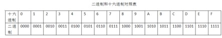

从0开始的汇编语言（一）
前言
从0开始的汇编语言系列，选用的参考书籍是清华大学出版社，王爽老师的《汇编语言第四版》。该系列属于博主的笔记系列，文中会采用一些书中的例子，图片以及思考题供读者阅读，如需详细学习汇编语言可以购入一本，谢谢。
学习之前我们做如下约定（随着学习深入还会出现新的约定）：
- 十六进制数均以H结尾
- 使用8086CPU作为案例
话不多说我们马上开始。
初识汇编
汇编语言（Assembly Language）是任何一种用于电子计算机、微处理器、微控制器或其他可编程器件的低级语言，亦称为符号语言。在汇编语言中，用助记符代替机器指令的操作码，用地址符号或标号代替指令或操作数的地址。在不同的设备中，汇编语言对应着不同的机器语言指令集，通过汇编过程转换成机器指令。特定的汇编语言和特定的机器语言指令集是一一对应的，不同平台之间不可直接移植。
早在计算机诞生之初，人们就开始使用机器语言和计算机进行交流了，因为计算机的硬件作为一种电路元件，其输入输出只能是高电平和低电平，所以计算机传递的数据是有“0”和“1”组成的二进制数。二进制的语言就是计算机语言的本质，所有的高级语言诸如JAVA，C++,C#等最终都会转化为一系列的二进制数供计算机阅读，最初的程序员们就是使用这样繁杂的机器语言利用打孔机重复的敲击“0”和“1”在纸带上留下他们奋斗的痕迹。
但你懂得”011001011010110….“这种东西简直实在折磨人，这么一大串数字要准确无误的输入是不可能的，人们很快的就发现了这一点，为了减轻这样的痛苦，人们对这种机器语言进行了升级改造，用一些简单的容易记忆的单词或者字母来代替一个特定的指令。通过这种办法人们可以很方便的进行编程。就这样汇编语言诞生了。
汇编在今天
“啊？！这么老的语言，我学他有什么用啊?我用JAVA,C++,C#不香嘛”，确实发展到今天汇编语言也已经被改进与高级语言相比汇编语言也成为了一种繁杂的编程语言。
但实际上汇编语言经历了这么长时间的变革以后，仍然具有一定的影响力。在2022年8月仍能站在前十大编程语言之中。
学习汇编并不是说一定要懂得使用汇编一定从事一个需要汇编的工作，因为汇编语言更接近计算机的底层，学习汇编可以充分的获得底层编程的体验，深刻理解机器运行的机理，这是学习高级语言所不可获得的，学习汇编对于其他计算机核心课程也有帮助。试问任何一个计算机科班出身的人，哪一位不希望了解计算机更原始更基底的奥秘呢？
基础知识
存储器
众所周知，CPU是电脑的核心部件，它控制着整个计算机的运行和计算，就像是人的大脑。CPU想进行工作就要为其提供指令和数据，指令和数据就存放在存储器中也就是我们常说的内存（也就是计算机中的内存条）。磁盘不同于内存，磁盘中的数据于指令如果没有被读取到内存中是无法被CPU使用的，故要灵活的使用汇编语言要了解CPU是如何从内存中读取和写入信息的。
CPU对存储器的读写
存储器在计算机眼里会被划分为多个存储单元，一个存储单元可以存储8个bit也就是1B，这些存储单元是通过一定的规则进行编号的，每一个编号就像是一个存储单元的地址一样。CPU想要进行数据的读写就需要这三类信息的交互：
- 存储单元的地址（地址信息）
- 器件的选择，读或写的命令（控制信息）
- 读或写的数据（数据信息）

地址总线
地址总线，线如其名，用于CPU与内存之间传递地址信息用的线的集合就叫做地址总线。地址总线上能传递多少个不同的信息就是可以对多少个存储单元（Byte）进行寻址，一个CPU具有N个地址线那么其就可以传递2的N次幂个内存单元，我们也称这个CPU的地址总线宽度为N，例如10根地址线的CPU，其地址总线宽度为10，其寻址能力为1KB。
数据总线
CPU与内存或者其他器件之间想要进行数据传递那一定是通过数据总线来进行的，数据总线的宽度决定了数据传递的速度，比如8根数据总线一次可以传递1B的数据，那么16根数据总线一次就可以传递2B的数据。这里顺便说一下在整个汇编学习中使用的一般都是十六进制数，因为它和二进制数对应关系更为明显，每4位二进制数就对应1位十六进制数。故由此可知，每2位十六进制数就对应了1B的数据。

控制总线
控制总线就是CPU传递控制信息所用的线的集合，控制总线的宽度代表着CPU对器件的控制能力。
内存地址空间
什么是内存地址空间呢？内存空间地址大小取决于地址总线的宽度，内存地址空间和CPU的寻址空间大小是一样的为2的N次幂，这些可寻址的内存单元就构成了CPU的内存地址空间。
现在我们来深入讨论一下什么是内存地址空间。
首先我们从物理上来理解一下计算机存储，计算机会有很多个存储器，这些存储器从其读写属性上分类实则分为两类：随机存储器（RAM）和只读存储器（ROM），RAM可读可写，但必须带电存储如果关机则其数据也会丢失，而ROM顾名思义，只可以读不可写，关机后数据不会丢失。在计算机各个器件中诸如显卡，网卡等等都含有这些存储器。
这些东西从物理上是独立的器件，但实际上它们都通过总线和CPU相连，也就是说其实在CPU眼里大家都是一样的都是内存而已，所以抽象出来一个假想的逻辑存储器叫做内存地址空间。
因此，内存地址空间是我们在探讨CPU对于各类电子器件进行信息交流所假想出来的一种工具，方便我们理解CPU是通过对于不同内存地址操作来工作的。
搭建汇编语言环境
搜索DOSBox，下载对应系统下的DOSBox 并安装 戳我
下载需要的命令文件 戳我
将下载好的命令文件解压到你所安装的盘符根目录下，文件夹名为MASM（安装到D盘就直接解压到D盘中就行）
打开C:\Users\29421\AppData\Local\DOSBox 这个路径找到dosbox-0.74-3.conf 文件 在最后输入并保存
1
2mount d d:\masm
d:
tips：如果没有AppData需要设置“显示隐藏的文件、文件夹和驱动器”。
 wechat
wechat alipay
alipay